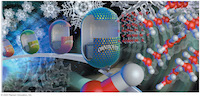
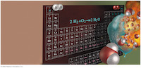
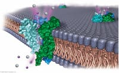
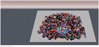

Lecture Notes (Fall 2011)
Chapter 1 (Measurement and the Properties of Matter)
Lecture 2, Wednesday, August 24th, 2011
Lecture 3, Friday, August 26th, 2011
Lecture 4, Monday, August 29th, 2011
Chapter 1 resources:
LibreText chapter 1Youtube resources:
- Measurement & Sig Figs- Conversions using dimensional analysis
Chapter 2 (Atoms, Ions, and Molecules)

Lecture 5, Wednesday, August 31st, 2011
Lecture 6, Friday, September 2nd, 2011
Lecture 7, Wednesday, September 7th, 2011
Lecture 8, Friday, September 9th, 2011
Lecture 9, Monday, September 12th, 2011
Chapter 2 resources:
LibreText chapter 2
Khan Academy:
- Naming ions and ionic compounds
- Empirical, molecular, and structural formulas
- isotopes and counting protons, neutrons, and electrons
Youtube resources:
- History of atomic theory
- Isotopes, symbols, p/n/e
- Naming ionic compounds
- Naming hydrates
- Naming molecular compounds
- Writing formulas with polyatomic ions
Chapter 3 (Mass Relationships in Chemical Reactions)
Lecture 9, Monday, September 12th, 2011
Lecture 10, Wednesday, September 14th, 2011
Lecture 11, Friday, September 16th, 2011
Lecture 12, Wednesday, September 21st, 2011
Lecture 13, Friday, September 23rd, 2011
Chapter 3 resources:
LibreText chapter 3Khan Academy:
- atomic mass calculation- moles and Avogadro's number
- Balancing chemical equations
- Stoichiometry (g <> mol <> g)
- Limiting reagents
Youtube resources:
- Balancing equations- The mole in stoichiometry
- Limiting reagents & percent yield
Chapter 4 (Reactions in Aqueous Solutions)
Lecture 13, Friday, September 23rd, 2011
Lecture 14, Monday, September 26th, 2011
Lecture 15. Wednesday, September 28th, 2011
Lecture 16, Friday, September 30th, 2011
Lecture 17, Monday, October 3rd, 2011
Lecture 18, Wednesday, October 5th, 2011
Chapter 4 resources:
LibreText chapter 4Khan Academy:
- Molarity- Double replacement reactions
Youtube resources:
- Dilution calculations- Net ionic equations
Chapter 5 (Gases)
Lecture 19, Friday, October 7th, 2011
Lecture 20, Monday, October 10th, 2011
Lecture 21, Wednesday, October 12th, 2011
Lecture 22, Monday, October 17th, 2011
Chapter 5 resources:
LibreText chapter 5Chapter 6 (Thermochemistry)

Lecture 22, Monday, October 17th, 2011
Lecture 23, Wednesday, October 19th, 2011
Lecture 24, Friday, October 21st, 2011
Lecture 25, Monday, October 24th, 2011
Chapter 7 (Quantum Theory and the Electronic Structure of Atoms)

Lecture 25, Monday, October 24th, 2011
Lecture 26, Wednesday, October 26th, 2011
Lecture 27, Friday, October 28th, 2011
Lecture 28, Monday, October 31st, 2011
Lecture 29, Wednesday, November 2nd, 2011
Lecture 30, Friday, November 4th, 2011
Chapter 8 (Periodic Relationships Among the Elements)
Lecture 30, Friday, November 4th, 2011
Lecture 31, Monday, November 7th, 2011
Lecture 32, Wednesday, November 9th, 2011
Chapter 9 (Compounds and Bonding
Lecture 32, Wednesday, November 9th, 2011
Lecture 33, Wednesday, November 16th, 2011
Lecture 34, Friday, November 18th, 2011
Chapter 10 (Structure and Bonding Theories)
Lecture 35, Monday, November 21st, 2011
Lecture 36, Monday, November 28th, 2011
Lecture 37, Wednesday, November 30th, 2011
Lecture 38, Friday, December 2nd, 2011
Lecture 39, Monday, December 5th, 2011